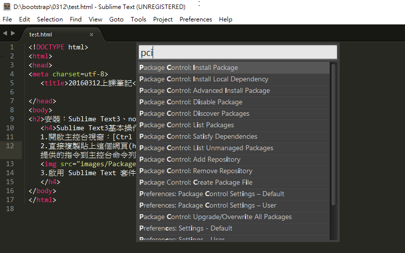
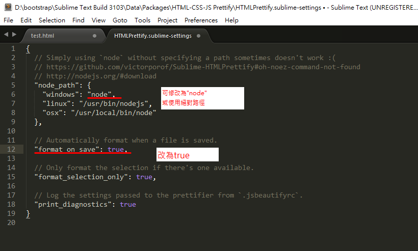

安裝：Sublime Text3、node.js4.4.0LTS
Sublime Text3基本設定：
1.開啟主控台視窗：[Ctrl + ` ] 組合鍵
2.直接複製貼上這個網頁(https://packagecontrol.io/installation)提供的指令到主控台命令列中，並直接按下 Enter 執行，即可動安裝完畢。

3.啟用 Sublime Text 套件管理員：[Ctrl+Shift+P]組合鍵。

點 Package Control : Install Package
3.1安裝htmlcssjs
3.2安裝emmet
3.3安裝autofile
4.易於編寫的 HTML/CSS/JS Prettify 整齊排版

5.Emmit快速功能鍵，增加編輯效率
5.1 運用[tab]鍵及數學符號[> ＋ * ( ) { $ } ]鍵
5.2